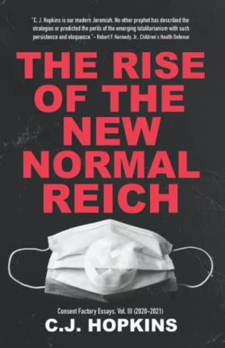
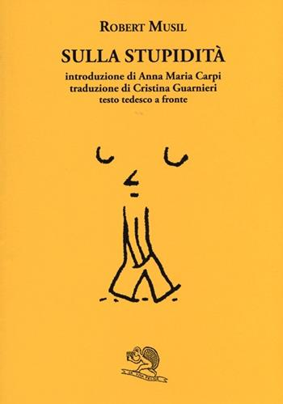

48:02 · 9 OPERE
Male morale e male naturale.
Il filo del discorso
La presentazione di una raccolta satirica di C. J. Hopkins diventa una riflessione sulla responsabilità delle scelte umane durante una emergenza. Il relatore apprezza soprattutto la prefazione e suggerisce Naomi Klein per approfondire il rapporto fra crisi e potere; si interroga però sui limiti dell’ironia quando viene estratta dal contesto. Slogan commerciali, immagini della pandemia e richiami a Huxley, Wells, Musil e alla Scuola di Francoforte accompagnano la sua critica del conformismo. La seconda parte distingue il male naturale, come una malattia o un terremoto, dal male morale attribuibile alle azioni umane. Secondo il relatore, il primo sarebbe stato usato per sottrarre le decisioni politiche al giudizio etico. Il racconto della barca vuota e gli esempi dei totalitarismi e del maccartismo articolano questa tesi, senza provare una equivalenza fra vicende storiche diverse. Le affermazioni sanitarie sulle mascherine e le accuse di manipolazione restano distinte dai fatti riscontrati: vedere il respiro al freddo non misura la filtrazione delle particelle, né il disagio dimostra intossicazione da CO₂.
I libri nel discorso

The Rise of the New Normal Reich: Consent Factory Essays, Vol. III (2020–2021)
Copertina: Consent Factory Publishing, maggio 2022, 236 pagine, ISBN 9783982146423, volume III dei saggi 2020–2021. Copertina autentica associata a questa edizione nel catalogo Open Library, coerente con la descrizione del relatore. Non si attribuisce alla lezione la successiva edizione Skyhorse del 2026. Le date catalografiche del 4 e 6 maggio sono diverse; il mese e l’anno sono riscontrati.
Immagine autentica dell’opera, controllata visivamente; l’edizione di riferimento non è attribuita al filmato.
Hopkins, terzo volume, titolo tradotto parzialmente e lettura della prefazione: raccolta Consent Factory Essays III del 2022.
Passaggio 0:01 ↗ · Fonti e libro ↗
The Shock Doctrine. The Rise of Disaster Capitalism (Shock economy)
Copertina: Copertina rossa dell’edizione canadese in brossura del 2008, Knopf Canada / Penguin Random House Canada, 672 pagine, ISBN 9780676978018.
Copertina autentica intera dal catalogo UBC, autore, titolo, sottotitolo e foro illustrato leggibili. La fotografia composita grigia del sito dell’autrice non è stata usata come copertina piana, e l’immagine Indigo non raggiungibile non è stata inclusa. Nessuna specifica edizione è confermata nel parlato.
Naomi Klein e The Shock Doctrine espliciti come approfondimento teorico distinto da Hopkins.
Passaggio 2:18 ↗ · Fonti e libro ↗
Il mondo nuovo
Copertina della raccolta: Mondadori · Oscar Moderni · 2016
L’immagine mostra il volume Mondadori che riunisce Il mondo nuovo e Ritorno al mondo nuovo. Il collegamento nel video riguarda il primo romanzo, per allusione al titolo inglese; non identifica un’edizione usata dal relatore.
Brave New World e Huxley espliciti, con nome deformato nella ASR.
Passaggio 12:29 ↗ · Fonti e libro ↗
Dichiarazione d’indipendenza degli Stati Uniti d’America
Facsimile: incisione di Stone del 1823: Documento del 4 luglio 1776 · incisione di William J. Stone del 1823
Riproduzione documentaria dell’incisione di Stone del 1823 conservata dai National Archives. Non è la pergamena originale del 1776, né la copertina di un libro.
Jefferson, uguaglianza e verità evidenti: Dichiarazione d’indipendenza esplicita, senza nuova voce per una traduzione.
Passaggio 17:49 ↗ · Fonti e libro ↗
La macchina del tempo
Copertina: Feltrinelli · Universale Economica, I classici
Wells, La macchina del tempo, Morlock ed Eloi espliciti, come analogia narrativa.
Passaggio 27:28 ↗ · Fonti e libro ↗
Dialettica dell’illuminismo
Copertina: Einaudi, Piccola Biblioteca Einaudi, 2010
Edizione illustrativa dell'opera, con traduzione di Renato Solmi e introduzione di Carlo Galli; non identificata nel video.
Titolo esplicito e edizione celebrativa Fischer; il catalogo verifica prefazione Eva von Redecker e ISBN9783103971521. Riutilizzata l’opera esistente.
Passaggio 28:39 ↗ · Fonti e libro ↗
Sulla stupidità
Copertina: La Vita Felice, 2013
Musil e conferenza Sulla stupidità espliciti.
Passaggio 32:37 ↗ · Fonti e libro ↗Zhuang-zi (Chuang-tzu)
Identificazione probabile
Copertina: Adelphi · Biblioteca Adelphi 121, 1982
Immagine autentica dell’opera, controllata visivamente; l’edizione di riferimento non è attribuita al filmato.
Parabola della barca vuota, non attribuita a un autore nel parlato; probabile rimando al capitolo20 dello Zhuangzi, da non classificare come testo originariamente buddhista zen.
Passaggio 38:14 ↗ · Fonti e libro ↗
Idea per una storia universale in un intento cosmopolitico
Identificazione probabile
Copertina della raccolta Sette scritti politici liberi: COPERTINA DELLA RACCOLTA Sette scritti politici liberi, Firenze University Press 2011, a cura di Maria Chiara Pievatolo, ISBN 9788864532981. Il saggio del 1784 è il primo testo della raccolta; la metafora del legno storto si trova nella sesta tesi, pagina stampata 31. Immagine della raccolta, non di un’edizione autonoma né dell’esemplare del relatore.
Copertina della raccolta che contiene il saggio del 1784; riutilizzata dal riferimento già presente al testo sull’Illuminismo. Il titolo del saggio è un’identificazione contestuale.
Kant e il legno storto riconoscibili: probabile riferimento alla sesta proposizione della Idea per una storia universale; titolo non pronunciato.
Passaggio 39:24 ↗ · Fonti e libro ↗Minutaggi ricavati da testi automatici, da riascoltare. Le identificazioni probabili sono segnalate accanto ai libri.